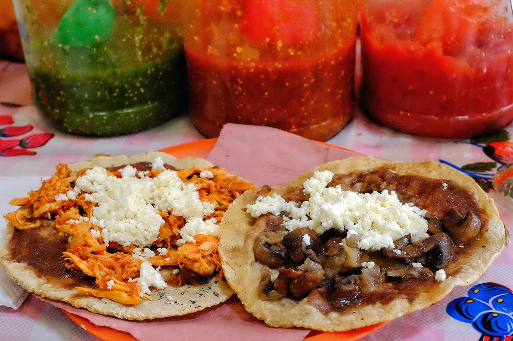

Chicken Tinga

Description:
This recipe is simple to make and has minimal ingredients so its appropriate for weeknight meals
Just be ready to have a blender on hand
Ingredients:
- 3 ½ lb chicken breasts
- 3 white onion, 1/2 in chunks, the rest thinly sliced
- 6 cloves garlic
- 3 bay leaves
- 1 tbsp salt
- 2 tsp black pepper
- 5 Roma tomatoes
- 4 chipotle peppers in adobo + some of their sauce (use the entire can like me for more spice)
- ½ tsp cumin
- 1 tsp Mexican oregano
- 2 tbsp Mazola Corn Oil
- For serving (tostadas, refried beans, shredded cabbage, diced tomatoes, crumbled queso fresco or cotija, Mexican crema or sour cream)
Steps:
- Bring a large pot of water to a boil, cut slits into the chicken breasts, add to the pot along with 1/2 of an onion, all the garlic, bay leaves, salt & pepper. Boil for 20 minutes.
- 3 ½ lb chicken breasts
- 3 white onion, 1/2 in chunks, the rest thinly sliced
- 6 cloves garlic
- 3 bay leaves
- 1 tbsp salt
- 2 tsp black pepper
- After 20 minutes of boiling the chicken, add in the tomatoes & boil for 5 more minutes.
- Take the chicken out of the pot and set aside, take out all the garlic, onion and tomatoes and reserve 2 cups of the cooking liquid.
- Add the garlic, onion, tomatoes to a blender along with 1 cup of the cooking water, the cumin & Mexican oregano, the chipotle peppers, blend until smooth, taste for seasonings & add salt/pepper to taste if needed. You can also add more of the water if it looks to thin.
- Once the chicken has cooled, shred it to your desired consistency, I like to leave it in slightly bigger pieces so I use two forks, for a finer shred, use the mixer method.
- To a large skillet on medium heat, add the Mazola corn oil, once hot, add all the sliced onions and cook for 5-7 minutes or until softened and translucent.
- Add the sauce to the onion and combine well. Add the shredded chicken and mix to combine. Bring to a simmer, then reduce heat to low until ready to serve.
- To serve your tinga, get tostadas, slather with refried beans, then the tinga, then garnish with shredded cabbage, tomatoes, Mexican crema & crumbled queso.
- Any leftover tinga freezes perfectly so itll last longer. Works great for meal preps as well